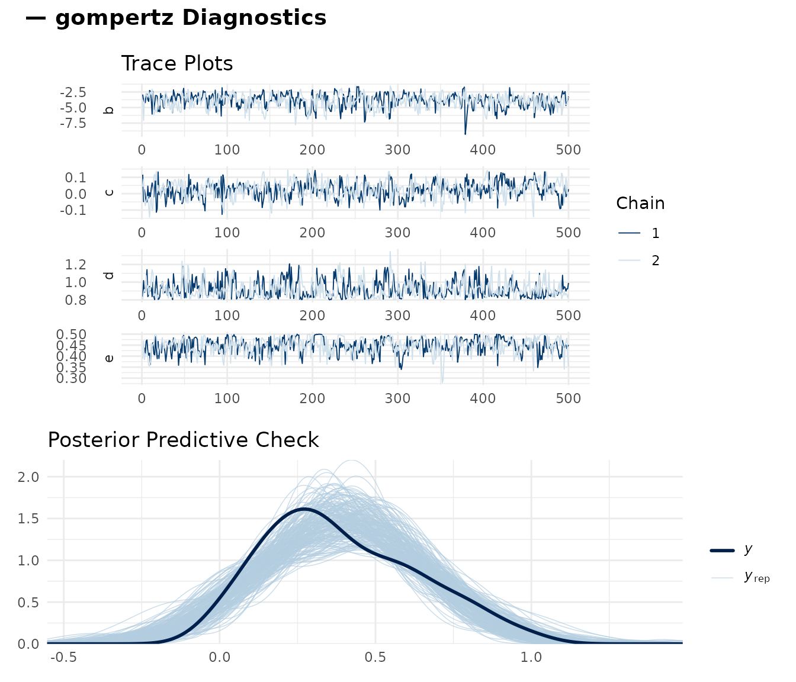
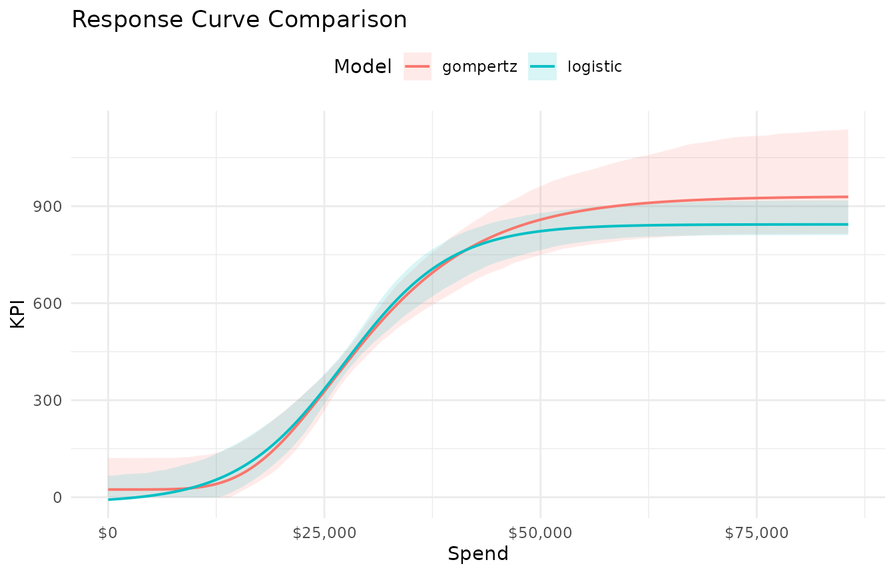
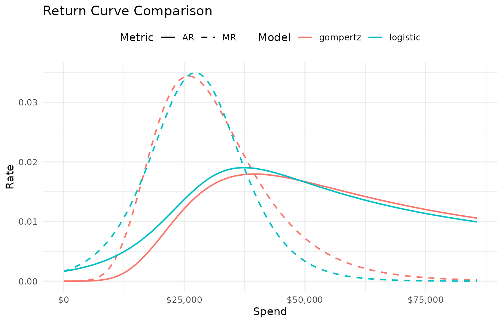
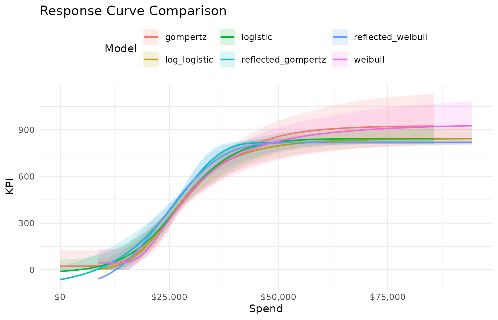

Diagnostics and Model Comparison
diagnostics_and_comparison.RmdFitting a response curve is the easy part. Knowing whether the fit is trustworthy requires checking convergence diagnostics, evaluating predictive performance, and comparing candidate curve types. This vignette covers the full diagnostic and comparison workflow.
Fit two candidate models
We’ll work with the Paid Social channel from
mrmopt_data, comparing a Gompertz and a logistic curve:
social_data <- mrmopt_data |> filter(channel == "Paid Social")
fit_gomp <- fit_response(
data = social_data,
spend = "spend",
kpi = "conversions",
date = "week",
type = "gompertz",
midpoint_range = c(0.1, 0.5),
ceiling_max = 3,
refresh = 0,
iter = 1000,
chains = 2
)
#> conversions ~ c + (d - c) * exp(-exp(b * (spend - e)))
#> b ~ 1
#> c ~ 1
#> d ~ 1
#> e ~ 1
fit_logistic <- fit_response(
data = social_data,
spend = "spend",
kpi = "conversions",
date = "week",
type = "logistic",
midpoint_range = c(0.1, 0.5),
ceiling_max = 3,
refresh = 0,
iter = 1000,
chains = 2
)
#> conversions ~ c + ((d - c)/(1 + exp(b * (spend - e))))
#> b ~ 1
#> c ~ 1
#> d ~ 1
#> e ~ 1Step 1: MCMC convergence
Before interpreting any results, verify that the sampler converged. A model that hasn’t converged can produce arbitrarily wrong parameter estimates.
Trace plots
mrm_plot_diagnostics() produces trace plots for the four
curve parameters plus a posterior predictive check:
mrm_plot_diagnostics(fit_gomp)
Note: An mrmfit object is a brms object so
further diagnostics with functions from bayesplot will work
as expected
class(fit_logistic)
#> [1] "mrmfit" "brmsfit"What to look for in trace plots:
- Good: Chains overlap completely, forming a “fuzzy caterpillar.” No trends, no drift, no one chain stuck in a different region.
- Bad: Chains that separate (bimodal posterior), chains that trend upward or downward (haven’t converged), or chains that get stuck in one region for many iterations (poor mixing).
Numerical diagnostics: Rhat and ESS
The summary() method reports Rhat and Bulk ESS for each
parameter:
summary(fit_gomp)
#> Family: gaussian
#> Links: mu = identity
#> Formula: conversions ~ c + (d - c) * exp(-exp(b * (spend - e)))
#> b ~ 1
#> c ~ 1
#> d ~ 1
#> e ~ 1
#> Data: data (Number of observations: 104)
#> Draws: 2 chains, each with iter = 1000; warmup = 500; thin = 1;
#> total post-warmup draws = 1000
#>
#> Regression Coefficients:
#> Estimate Est.Error l-95% CI u-95% CI Rhat Bulk_ESS Tail_ESS
#> b_Intercept -3.96 1.13 -6.41 -2.15 1.00 480 540
#> c_Intercept 0.02 0.05 -0.08 0.12 1.00 418 546
#> d_Intercept 0.92 0.10 0.81 1.15 1.00 443 596
#> e_Intercept 0.45 0.04 0.37 0.50 1.00 307 217
#>
#> Further Distributional Parameters:
#> Estimate Est.Error l-95% CI u-95% CI Rhat Bulk_ESS Tail_ESS
#> sigma 0.20 0.01 0.17 0.22 1.00 650 531
#>
#> Draws were sampled using sampling(NUTS). For each parameter, Bulk_ESS
#> and Tail_ESS are effective sample size measures, and Rhat is the potential
#> scale reduction factor on split chains (at convergence, Rhat = 1).Targets:
| Diagnostic | Target | Concern |
|---|---|---|
| Rhat | ≤ 1.01 | Values above 1.01 indicate chains haven’t converged to the same distribution |
| Bulk ESS | > 400 | Below 400, posterior summaries (means, quantiles) may be unreliable |
| Tail ESS | > 400 | Low tail ESS means credible interval endpoints are unstable |
If Rhat > 1.01 for any parameter, do not trust the results.
Increase iter and warmup, or adjust priors
(see Priors and Model Tuning).
Step 2: Posterior predictive check
The bottom panel of mrm_plot_diagnostics() shows a
posterior predictive check (PPC). This compares the
observed data distribution to data simulated from the fitted model.
What to look for:
- Good: The blue posterior draws envelope the black observed-data line. The overall shape and spread match.
- Bad: A systematic shift (model predicts higher/lower than observed), a shape mismatch (model is unimodal but data is bimodal), or the observed data falls outside the posterior draws entirely.
A PPC failure usually means the curve form is wrong for this data, not that the sampler failed. Try a different curve type.
Step 3: Bayes R²
Bayes R² provides a posterior distribution of explained variance. It
is reported in both print() and summary():
cat("Gompertz R²:\n")
#> Gompertz R²:
print(fit_gomp)
#> -- Response Curve Summary: gompertz ------------------------------------------
#> Channel: spend
#> Weeks: 104
#> -- Current Performance -------------------------------------------------------
#> Weekly Spend: $27,082
#> KPI: 399 | CP: $70 | AR: 0.0137 | MR: 0.0341
#> -- Parameters ----------------------------------------------------------------
#> b (growth rate): -1.03e-04
#> c (floor): 24
#> d (ceiling): 931
#> e (midpoint): $25,879
#> -- Response Curve Summary ----------------------------------------------------
#> Min (peak MR): $25,886 -> KPI: 358 | CP: $72
#> Peak (peak AR): $39,579 -> KPI: 735 | CP: $54
#> Max (70% MR): $35,502 -> KPI: 650 | CP: $55
#>
#> 41.3% of weeks below range | 52.9% in range | 5.8% above range
#> -- Bayes R2 ------------------------------------------------------------------
#> R2: 0.4080 (95% CI: [0.2637, 0.5146])
#>
#> Use summary(x) for brms model diagnostics.
cat("\nLogistic R²:\n")
#>
#> Logistic R²:
print(fit_logistic)
#> -- Response Curve Summary: logistic ------------------------------------------
#> Channel: spend
#> Weeks: 104
#> -- Current Performance -------------------------------------------------------
#> Weekly Spend: $27,082
#> KPI: 407 | CP: $68 | AR: 0.0142 | MR: 0.0349
#> -- Parameters ----------------------------------------------------------------
#> b (growth rate): -1.62e-04
#> c (floor): -18
#> d (ceiling): 844
#> e (midpoint): $27,270
#> -- Response Curve Summary ----------------------------------------------------
#> Min (peak MR): $27,270 -> KPI: 413 | CP: $66
#> Peak (peak AR): $37,733 -> KPI: 711 | CP: $53
#> Max (70% MR): $34,963 -> KPI: 652 | CP: $54
#>
#> 51% of weeks below range | 42.3% in range | 6.7% above range
#> -- Bayes R2 ------------------------------------------------------------------
#> R2: 0.4219 (95% CI: [0.2897, 0.5249])
#>
#> Use summary(x) for brms model diagnostics.Interpretation:
- R² > 0.6: Well-identified curve. The response model explains a substantial share of the variation. Current mix of partners, tactics, audiences within a channel are sufficiently homogeneous to be modeled by one response curve.
- R² 0.4–0.6: Moderate fit. The curve captures the general trend but there is significant unexplained noise. Variation in the data may suggest the need for more nuanced modeling or classification of channels.
- R² < 0.4: Weak fit. The curve may not be well-identified from this data. Consider whether the data has enough spend variation, or whether the relationship is genuinely noisy. The channel is likely composed of subchannels with distinct response behavior, or is reflective of large strategic shifts in media buy and execution.
Bayes R² is useful for relative comparison between curve types on the same data, but the absolute value depends heavily on the noise level in the channel. A lower R² does not render the model useless, but does warrant a further investigation into the need for more nuanced modeling or classification of channels.
Step 4: Visual comparison
mrms_plot_compare() overlays multiple fitted curves on a
single axis, making shape differences immediately visible:
mrms_plot_compare(
list(gompertz = fit_gomp, logistic = fit_logistic),
interval = "confidence"
)
The interval argument controls the uncertainty band:
-
"prediction"(default): Includes observation noise — wider, represents where future data points might fall. -
"confidence": Shows uncertainty in the mean curve only — narrower, better for comparing curve shapes. -
"none": Just the fitted curves.
Faceted layout
For more than two models, a faceted layout can be easier to read:
mrms_plot_compare(
list(gompertz = fit_gomp, logistic = fit_logistic),
layout = "facet",
interval = "prediction"
)Return curves
Compare marginal and average return curves to see how the curve type affects efficiency estimates:
mrms_plot_compare(
list(gompertz = fit_gomp, logistic = fit_logistic),
plot_type = "return",
interval = "none"
)
Differences in the marginal return curve between curve types directly affect optimization results — a model that predicts faster diminishing returns will recommend reallocating spend away from that channel sooner.
Step 5: Comparing across all six curve types
For a thorough model selection, fit all six types and compare:
curve_types <- c(
"gompertz", "logistic", "reflected_gompertz",
"log_logistic", "weibull", "reflected_weibull"
)
fits <- lapply(curve_types, function(ct) {
fit_response(
data = social_data,
spend = "spend",
kpi = "conversions",
date = "week",
type = ct,
midpoint_range = c(0.1, 0.5),
ceiling_max = 3,
refresh = 0,
iter = 1000,
chains = 2
)
})
#> conversions ~ c + (d - c) * exp(-exp(b * (spend - e)))
#> b ~ 1
#> c ~ 1
#> d ~ 1
#> e ~ 1
#> conversions ~ c + ((d - c)/(1 + exp(b * (spend - e))))
#> b ~ 1
#> c ~ 1
#> d ~ 1
#> e ~ 1
#> conversions ~ c + (d - c) * (1 - exp(-exp(b * (-spend + e))))
#> b ~ 1
#> c ~ 1
#> d ~ 1
#> e ~ 1
#> conversions ~ c + ((d - c)/(1 + exp(b * (log(spend) - log(e)))))
#> b ~ 1
#> c ~ 1
#> d ~ 1
#> e ~ 1
#> conversions ~ c + (d - c) * exp(-exp(b * (log(spend) - log(e))))
#> b ~ 1
#> c ~ 1
#> d ~ 1
#> e ~ 1
#> conversions ~ c + (d - c) * (1 - exp(-exp(b * (-log(spend) + log(e)))))
#> b ~ 1
#> c ~ 1
#> d ~ 1
#> e ~ 1
names(fits) <- curve_types
mrms_plot_compare(fits, interval = "confidence")
A decision framework
Use this sequence to choose a curve type:
- Eliminate non-converged models. Any model with Rhat > 1.01 or very low ESS is unreliable and should not be compared.
- Check the PPC. Models with systematic PPC failures are misspecified for this data, regardless of R².
- Compare Bayes R². Among surviving models, prefer higher R² — but treat small differences (< 0.02) as noise.
- Compare credible band width. Tighter bands mean the data more strongly constrains the curve. A model with slightly lower R² but much tighter bands may be preferable.
- Check domain plausibility. Does the ceiling estimate make sense? Is the midpoint in a reasonable range? A model that fits the data slightly better but produces implausible parameter estimates is less useful for optimization.
When two models are genuinely indistinguishable, prefer the simpler one (Gompertz or log-logistic over reflected variants) or run the optimization with both and check whether the allocation decision changes materially.
Diagnostic workflow for a full portfolio
When fitting multiple channels for optimization, run diagnostics on every channel — not just the first one. A quick check loop:
for (ch_name in names(fits_portfolio)) {
cat("\n===", ch_name, "===\n")
print(summary(fits_portfolio[[ch_name]]))
}If any channel has convergence issues, the optimization results for the entire portfolio are suspect — the optimizer will misallocate spend to/from poorly identified channels.
Where to go next
| Topic | Vignette |
|---|---|
| Tuning priors when diagnostics reveal problems | Priors & Model Tuning |
| Budget optimization across channels | Optimization |
| Hierarchical models for sub-channel structure | Hierarchical Models |